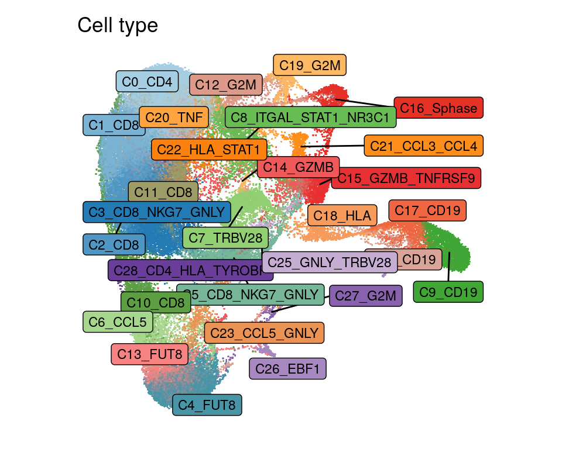
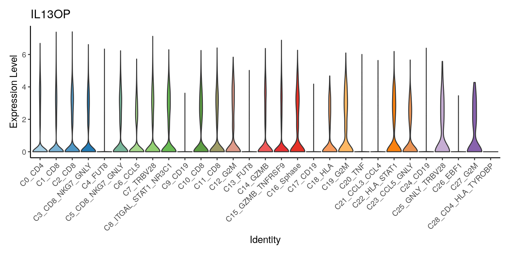
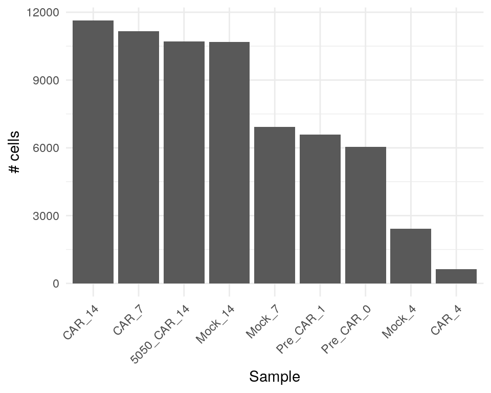
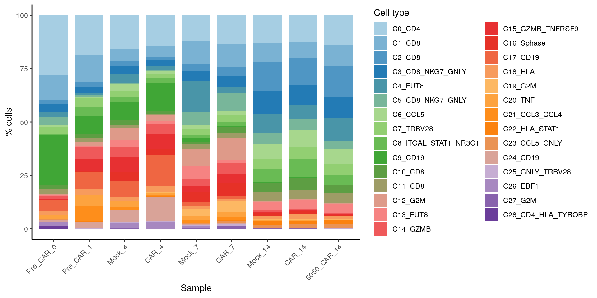
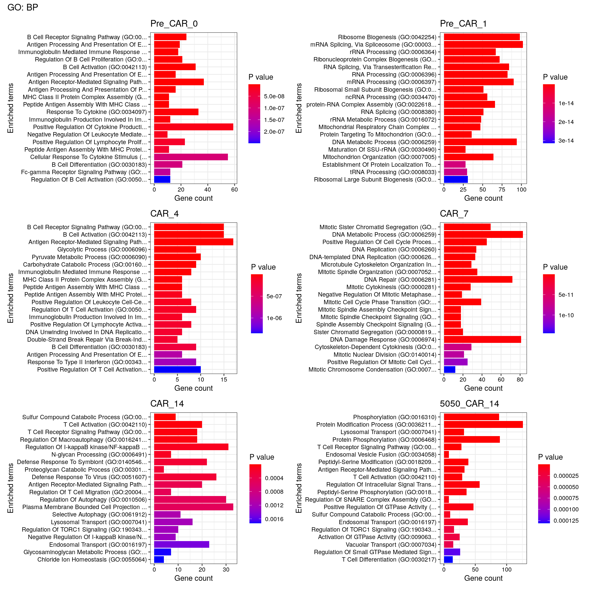
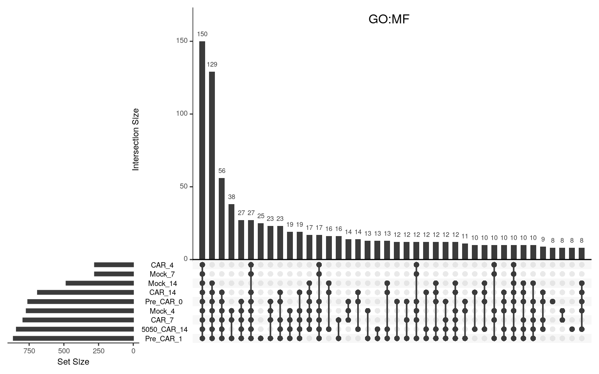

Cell phenotypes across samples and timepoints
heinin
2024-11-21
Last updated: 2024-12-05
Checks: 5 2
Knit directory: 19130_CAR_production/
This reproducible R Markdown analysis was created with workflowr (version 1.7.1). The Checks tab describes the reproducibility checks that were applied when the results were created. The Past versions tab lists the development history.
The R Markdown is untracked by Git. To know which version of the R
Markdown file created these results, you’ll want to first commit it to
the Git repo. If you’re still working on the analysis, you can ignore
this warning. When you’re finished, you can run
wflow_publish to commit the R Markdown file and build the
HTML.
Great job! The global environment was empty. Objects defined in the global environment can affect the analysis in your R Markdown file in unknown ways. For reproduciblity it’s best to always run the code in an empty environment.
The command set.seed(20240522) was run prior to running
the code in the R Markdown file. Setting a seed ensures that any results
that rely on randomness, e.g. subsampling or permutations, are
reproducible.
Great job! Recording the operating system, R version, and package versions is critical for reproducibility.
Nice! There were no cached chunks for this analysis, so you can be confident that you successfully produced the results during this run.
Using absolute paths to the files within your workflowr project makes it difficult for you and others to run your code on a different machine. Change the absolute path(s) below to the suggested relative path(s) to make your code more reproducible.
| absolute | relative |
|---|---|
| /home/hnatri/19130_CAR_production/ | . |
| /home/hnatri/19130_CAR_production/code/CART_plot_functions.R | code/CART_plot_functions.R |
| /home/hnatri/19130_CAR_production/code/colors_themes.R | code/colors_themes.R |
Great! You are using Git for version control. Tracking code development and connecting the code version to the results is critical for reproducibility.
The results in this page were generated with repository version b2c9c1d. See the Past versions tab to see a history of the changes made to the R Markdown and HTML files.
Note that you need to be careful to ensure that all relevant files for
the analysis have been committed to Git prior to generating the results
(you can use wflow_publish or
wflow_git_commit). workflowr only checks the R Markdown
file, but you know if there are other scripts or data files that it
depends on. Below is the status of the Git repository when the results
were generated:
Ignored files:
Ignored: code/.RData
Untracked files:
Untracked: Rplots.pdf
Untracked: analysis/CAR_enrichment.Rmd
Untracked: analysis/CAR_enrichment_2nd_run.Rmd
Untracked: analysis/STARTRAC.Rmd
Untracked: analysis/TCR_overlap.Rmd
Untracked: analysis/VDJ_processing.Rmd
Untracked: analysis/annotation.Rmd
Untracked: analysis/basic_analysis.Rmd
Untracked: analysis/enrichment_libraries_only.Rmd
Untracked: analysis/integration.Rmd
Untracked: analysis/process_10x_2nd_run.Rmd
Untracked: analysis/process_10x_Run3.Rmd
Untracked: code/CART_plot_functions.R
Untracked: code/ProjecTILs_annotation.R
Untracked: code/ProjecTILs_annotation.Rout
Untracked: code/Rplots.pdf
Untracked: code/colors_themes.R
Untracked: code/old_enrichment.R
Untracked: code/ref_TILAtlas_mouse_v1.rds
Untracked: code/run_rscript.sh
Untracked: code/slurm.13465073.err
Untracked: code/slurm.13465073.out
Untracked: code/slurm.13465074.err
Untracked: code/slurm.13465074.out
Untracked: code/slurm.13465091.err
Untracked: code/slurm.13465091.out
Untracked: ref_TILAtlas_mouse_v1.rds
Unstaged changes:
Modified: analysis/index.Rmd
Modified: analysis/process_10x.Rmd
Note that any generated files, e.g. HTML, png, CSS, etc., are not included in this status report because it is ok for generated content to have uncommitted changes.
There are no past versions. Publish this analysis with
wflow_publish() to start tracking its development.
Cell type abundance, gene expression, and pathway enrichment across and between samples
Libraries and environment variables
library(workflowr)
library(Seurat)
library(googlesheets4)
library(tidyverse)
library(plyr)
library(UpSetR)
library(ggrepel)
library(kableExtra)
library(enrichR)
library(patchwork)
setwd("/home/hnatri/19130_CAR_production/")
set.seed(1234)
options(future.globals.maxSize = 30000 * 1024^2)
reduction <- "INTEGRATEDSCTUMAP"
source("/home/hnatri/19130_CAR_production/code/CART_plot_functions.R")
source("/home/hnatri/19130_CAR_production/code/colors_themes.R")
# Cluster annotations
gs4_deauth()
cluster_annot <- gs4_get("https://docs.google.com/spreadsheets/d/1DstdK4vXjk7ZEeBalW_4CA6Vmd57BGENUx3iMDRLszk/edit?usp=sharing")
cluster_annot <- read_sheet(cluster_annot, sheet = "Cluster annotations")
head(cluster_annot)Import data
# Integrated data
integrated_seurat <- readRDS("/tgen_labs/banovich/pediatric_CAR-T/02_production/19130_CAR_production_integrated_ProjecTILs.rds")
integrated_seurat$cluster <- integrated_seurat$integratedSCTsnn_res.1
# Adding annotations
integrated_seurat$annot <- mapvalues(x = integrated_seurat$cluster,
from = cluster_annot$integratedSCTsnn_res.1,
to = cluster_annot$cluster_name)
# Merging layers
integrated_seurat <- JoinLayers(integrated_seurat)
integrated_seurat <- NormalizeData(integrated_seurat)
integrated_seurat <- ScaleData(integrated_seurat)
# Adding TCR data
combined_tcr <- readRDS("/tgen_labs/banovich/pediatric_CAR-T/02_production/19130_CAR_production_VDJ_data.rds")
#combined_tcr_df <- do.call("rbind", combined_tcr)
# Renaming and downgrading assays from v5 to v3 for sce conversion
integrated_seurat[["RNA"]] <- as(integrated_seurat[["RNA"]], Class="Assay")
integrated_seurat[["SoupX_RNA"]] <- as(integrated_seurat[["SoupX_RNA"]], Class="Assay")
integrated_seurat[["SoupXRNA"]] = integrated_seurat[["SoupX_RNA"]]
integrated_seurat[["SoupX_RNA"]] <- NULL
# Converting Seurat to sce
sce <- as.SingleCellExperiment(integrated_seurat,
assay = "RNA")
# Adding TCR info to the object
sce <- scRepertoire::combineExpression(combined_tcr,
sce,
cloneCall = "gene",
group.by = "sample",
proportion = FALSE,
cloneSize = c(Single = 1,
Small = 5,
Medium = 20,
Large = 100,
Hyperexpanded = 500))
# Converting to Seurat
integrated_seurat <- as.Seurat(sce,
counts = "counts",
data = "logcounts")
#saveRDS(integrated_seurat, "/tgen_labs/banovich/pediatric_CAR-T/02_production/19130_CAR_production_integrated_VDJ.rds")integrated_seurat <- readRDS("/tgen_labs/banovich/pediatric_CAR-T/02_production/19130_CAR_production_integrated_VDJ.rds")Sample types
df <- data.frame("Day" = c(0, 1, 4, 7, 14),
"Step" = c("Thaw",
"Post bead stim",
"Post virus",
"Post bead removal",
"Freezedown"))
df %>%
kbl() %>%
kable_styling()| Day | Step |
|---|---|
| 0 | Thaw |
| 1 | Post bead stim |
| 4 | Post virus |
| 7 | Post bead removal |
| 14 | Freezedown |
CAR positivity
Numbers of reads (log-normalized) mapping to the IL13Ra2 CAR construct
DimPlot(integrated_seurat,
group.by = "annot",
cols = product_celltype_col,
reduction = reduction,
label = T,
label.box = T,
label.size = 3,
repel = T,
raster = T,
raster.dpi = c(1024, 1024),
pt.size = 3) +
ggtitle("Cell type") +
theme_classic() +
NoLegend() +
NoAxes() +
coord_fixed(1)
FeaturePlot(integrated_seurat,
features = c("IL13OP"),
slot = "data",
cols = c("gray89", "tomato3"),
order = T,
ncol = 1,
raster = T,
raster.dpi = c(2048, 1024),
pt.size = 4) &
coord_fixed(ratio = 1) &
theme_classic()Expression by cell type
VlnPlot(integrated_seurat,
features = c("IL13OP"),
group.by = "annot",
cols = product_celltype_col,
pt.size = 0) &
theme_classic() +
NoLegend() +
RotatedAxis()
Cell numbers
table(integrated_seurat$Sample_Name) %>%
as.data.frame() %>%
ggplot(aes(x = reorder(Var1, -Freq), y = Freq)) +
geom_bar(stat = "identity") +
theme_minimal() +
RotatedAxis() +
xlab("# cells")Cell type proportions
# seurat_object = Seurat object
# plot_var = e.g. cluster
# group_var = e.g. response (cell proportions are plotted for each group)
# group_levels = a vector for ordering the grouping variable levels
# plot_levels = a vector for ordering the plot variable levels
# plot_colors = A named vector of colors to use in the plot, corresponding to plot_var (e.g. cluster colors)
# var_names = Used as axis titles, c("plot_var_name", "group_var_name")
# legend_title = Legend title, ("" for no title)
create_barplot(seurat_object = integrated_seurat,
plot_var = "annot",
group_var = "Sample_Name",
group_levels = unique(integrated_seurat$Sample_Name),
plot_levels = sort(unique(integrated_seurat$annot)),
plot_colors = product_celltype_col,
var_names = c("% cells", "Sample"),
legend_title = "Cell type")
Pairwise comparisons
# seurat_object = Seurat object
# group_var = e.g. CD3_status
# group1 = e.g. High
# group2 = e.g. Low
# plot_var = e.g. celltype
# plot_colors = A named vector of colors to use in the plot, corresponding to plot_var (e.g. cell type colors)
# var_names = Used as axis titles, c("group2", "group1")
# legend_title = Legend title, ("" for no title)
create_clusterpropplot(seurat_object = integrated_seurat,
plot_var = "annot",
group_var = "Sample_Name",
group1 = "Pre_CAR_1",
group2 = "Pre_CAR_0",
plot_colors = product_celltype_col,
var_names = c("Pre-CAR D1", "Pre-CAR D0"),
legend_title = "Cell type")
create_clusterpropplot(seurat_object = integrated_seurat,
plot_var = "annot",
group_var = "Sample_Name",
group1 = "CAR_4",
group2 = "Mock_4",
plot_colors = product_celltype_col,
var_names = c("Mock D4", "CAR D4"),
legend_title = "Cell type")create_clusterpropplot(seurat_object = integrated_seurat,
plot_var = "annot",
group_var = "Sample_Name",
group1 = "CAR_7",
group2 = "Mock_7",
plot_colors = product_celltype_col,
var_names = c("Mock D7", "CAR D7"),
legend_title = "Cell type")create_clusterpropplot(seurat_object = integrated_seurat,
plot_var = "annot",
group_var = "Sample_Name",
group1 = "CAR_14",
group2 = "Mock_14",
plot_colors = product_celltype_col,
var_names = c("Mock D14", "CAR D14"),
legend_title = "Cell type")DEGs by timepoint/sample
Idents(integrated_seurat) <- "Sample_Name"
celltype_markers <- FindAllMarkers(integrated_seurat,
assay = "RNA",
logfc.threshold = 0.5)GO pathway over-representation testing of top markers for each sample
dbs <- listEnrichrDbs()
dbs$libraryName
dbs <- c("GO_Molecular_Function_2023",
"GO_Cellular_Component_2023",
"GO_Biological_Process_2023")
enrich_list <- lapply(unique(integrated_seurat$Sample_Name), function(xx){
message(xx)
enrich_input <- celltype_markers %>% filter(cluster == xx,
p_val_adj < 0.01,
avg_log2FC > 0.5)
enrichr(enrich_input$gene, dbs)
})
names(enrich_list) <- unique(integrated_seurat$Sample_Name)
# Ploting top pathways
plot_list <- lapply(unique(integrated_seurat$Sample_Name), function(xx){
message(xx)
p1 <- plotEnrich(enrich_list[[xx]][[1]], showTerms = 20, numChar = 40, y = "Count", orderBy = "P.value") +
ggtitle(names(enrich_list[[xx]])[1])
p2 <- plotEnrich(enrich_list[[xx]][[2]], showTerms = 20, numChar = 40, y = "Count", orderBy = "P.value") +
ggtitle(names(enrich_list[[xx]])[2])
p3 <- plotEnrich(enrich_list[[xx]][[3]], showTerms = 20, numChar = 40, y = "Count", orderBy = "P.value") +
ggtitle(names(enrich_list[[xx]])[3])
p1 + p2 + p3 + plot_annotation(title = xx)
})
#plot_listTop pathways in CAR samples
# Ploting top pathways, CAR and BP only
plot_list <- lapply(setdiff(unique(integrated_seurat$Sample_Name), c("Mock_4", "Mock_7", "Mock_14")), function(xx){
message(xx)
p3 <- plotEnrich(as.data.frame(enrich_list[[xx]][[3]]), showTerms = 20, numChar = 40, y = "Count", orderBy = "P.value") +
ggtitle(xx)
p3
})
head(as.data.frame(enrich_list[["CAR_4"]][[3]]))
head(as.data.frame(enrich_list[["Mock_7"]][[3]]))
celltype_markers %>% filter(cluster == "CAR_14",
p_val_adj < 0.01,
avg_log2FC > 0.5) %>% dim()
celltype_markers %>% filter(cluster == "Mock_14",
p_val_adj < 0.01,
avg_log2FC > 0.5) %>% dim()
wrap_plots(plot_list, ncol = 2) + plot_annotation(title = "GO: BP")
Plotting enriched pathways in CAR and mock side by side
# Potting CAR vs. mock
plot_list <- lapply(setdiff(unique(integrated_seurat$Sample_Name), c("Pre_CAR_0", "Pre_CAR_1", "5050_CAR_14")), function(xx){
message(xx)
p3 <- plotEnrich(as.data.frame(enrich_list[[xx]][[3]]), showTerms = 20, numChar = 40, y = "Count", orderBy = "P.value") +
ggtitle(xx)
p3
})
names(plot_list) <- setdiff(unique(integrated_seurat$Sample_Name), c("Pre_CAR_0", "Pre_CAR_1", "5050_CAR_14"))
plot_list <- plot_list[c("CAR_4", "Mock_4",
"CAR_7", "Mock_7",
"CAR_14", "Mock_14")]
head(as.data.frame(enrich_list[["CAR_14"]][[3]]))
head(as.data.frame(enrich_list[["Mock_14"]][[3]]))
wrap_plots(plot_list, ncol = 2) + plot_annotation(title = "GO: BP")
Non-enriched vs. enriched CAR D14
integrated_seurat$Sample_Name <- gsub("5050_CAR_14", "nonEnriched_CAR_14",
integrated_seurat$Sample_Name)
create_clusterpropplot(seurat_object = integrated_seurat,
plot_var = "annot",
group_var = "Sample_Name",
group2 = "nonEnriched_CAR_14",
group1 = "CAR_14",
plot_colors = product_celltype_col,
var_names = c("Non-enriched CAR D14", "Enriched CAR D14"),
legend_title = "Cell type")
Pre-CAR vs. D14 (freezedown)
create_clusterpropplot(seurat_object = integrated_seurat,
plot_var = "annot",
group_var = "Sample_Name",
group1 = "Pre_CAR_0",
group2 = "CAR_14",
plot_colors = product_celltype_col,
var_names = c("Pre-CAR D0", "CAR D14"),
legend_title = "Cell type")create_clusterpropplot(seurat_object = integrated_seurat,
plot_var = "annot",
group_var = "Sample_Name",
group1 = "Pre_CAR_1",
group2 = "CAR_14",
plot_colors = product_celltype_col,
var_names = c("Pre-CAR D1", "CAR D14"),
legend_title = "Cell type")table(integrated_seurat$annot, integrated_seurat$Sample_Name)Expanded vs. non-expanded clones
create_barplot(seurat_object = integrated_seurat,
plot_var = "annot",
group_var = "cloneSize",
group_levels = c("Single (0 < X <= 1)",
"Small (1 < X <= 5)",
"Medium (5 < X <= 20)",
"Large (20 < X <= 100)"),
plot_levels = sort(unique(integrated_seurat$annot)),
plot_colors = product_celltype_col,
var_names = c("% cells", "Sample"),
legend_title = "Cell type") + xlab("")Comparing single clones to expanded clones
integrated_seurat$expanded <- ifelse(integrated_seurat$cloneSize == "Single (0 < X <= 1)", "single",
ifelse(integrated_seurat$cloneSize %in% c("Small (1 < X <= 5)",
"Medium (5 < X <= 20) ",
"Large (20 < X <= 100)"), "expanded", NA))
create_clusterpropplot(seurat_object = integrated_seurat,
plot_var = "annot",
group_var = "expanded",
group1 = "single",
group2 = "expanded",
plot_colors = product_celltype_col,
var_names = c("Single", "Expanded (small, medium, large)"),
legend_title = "Cell type")table(integrated_seurat$expanded, integrated_seurat$annot)integrated_seurat$expanded <- ifelse(integrated_seurat$cloneSize == "Single (0 < X <= 1)", "single",
ifelse(integrated_seurat$cloneSize %in% c("Large (20 < X <= 100)"), "expanded", NA))
create_clusterpropplot(seurat_object = integrated_seurat,
plot_var = "annot",
group_var = "expanded",
group1 = "single",
group2 = "expanded",
plot_colors = product_celltype_col,
var_names = c("Single", "Expanded (large, >20 copies)"),
legend_title = "Cell type")
sessionInfo()R version 4.3.0 (2023-04-21)
Platform: x86_64-pc-linux-gnu (64-bit)
Running under: Ubuntu 22.04.3 LTS
Matrix products: default
BLAS: /usr/lib/x86_64-linux-gnu/openblas-pthread/libblas.so.3
LAPACK: /usr/lib/x86_64-linux-gnu/openblas-pthread/libopenblasp-r0.3.20.so; LAPACK version 3.10.0
locale:
[1] LC_CTYPE=en_US.UTF-8 LC_NUMERIC=C
[3] LC_TIME=en_US.UTF-8 LC_COLLATE=en_US.UTF-8
[5] LC_MONETARY=en_US.UTF-8 LC_MESSAGES=en_US.UTF-8
[7] LC_PAPER=en_US.UTF-8 LC_NAME=C
[9] LC_ADDRESS=C LC_TELEPHONE=C
[11] LC_MEASUREMENT=en_US.UTF-8 LC_IDENTIFICATION=C
time zone: Etc/UTC
tzcode source: system (glibc)
attached base packages:
[1] grid stats graphics grDevices utils datasets methods
[8] base
other attached packages:
[1] circlize_0.4.15 ComplexHeatmap_2.18.0 viridis_0.6.3
[4] viridisLite_0.4.2 RColorBrewer_1.1-3 patchwork_1.1.2
[7] enrichR_3.2 kableExtra_1.3.4.9000 ggrepel_0.9.3
[10] UpSetR_1.4.0 plyr_1.8.8 lubridate_1.9.2
[13] forcats_1.0.0 stringr_1.5.0 dplyr_1.1.2
[16] purrr_1.0.2 readr_2.1.4 tidyr_1.3.0
[19] tibble_3.2.1 ggplot2_3.4.2 tidyverse_2.0.0
[22] googlesheets4_1.1.0 Seurat_5.0.1 SeuratObject_5.0.1
[25] sp_1.6-1 workflowr_1.7.1
loaded via a namespace (and not attached):
[1] RcppAnnoy_0.0.20 splines_4.3.0 later_1.3.1
[4] cellranger_1.1.0 polyclip_1.10-4 fastDummies_1.7.3
[7] lifecycle_1.0.3 doParallel_1.0.17 rprojroot_2.0.3
[10] globals_0.16.2 processx_3.8.1 lattice_0.21-8
[13] MASS_7.3-60 magrittr_2.0.3 limma_3.58.1
[16] plotly_4.10.2 sass_0.4.6 rmarkdown_2.22
[19] jquerylib_0.1.4 yaml_2.3.7 httpuv_1.6.11
[22] sctransform_0.4.1 spam_2.9-1 spatstat.sparse_3.0-1
[25] reticulate_1.29 cowplot_1.1.1 pbapply_1.7-0
[28] abind_1.4-5 rvest_1.0.3 Rtsne_0.16
[31] presto_1.0.0 BiocGenerics_0.48.1 WriteXLS_6.4.0
[34] git2r_0.32.0 S4Vectors_0.40.2 IRanges_2.36.0
[37] irlba_2.3.5.1 listenv_0.9.0 spatstat.utils_3.0-3
[40] goftest_1.2-3 RSpectra_0.16-1 spatstat.random_3.1-5
[43] fitdistrplus_1.1-11 parallelly_1.36.0 svglite_2.1.1
[46] leiden_0.4.3 codetools_0.2-19 xml2_1.3.4
[49] shape_1.4.6 tidyselect_1.2.0 farver_2.1.1
[52] stats4_4.3.0 matrixStats_1.0.0 spatstat.explore_3.2-1
[55] googledrive_2.1.0 webshot_0.5.4 jsonlite_1.8.5
[58] GetoptLong_1.0.5 ellipsis_0.3.2 progressr_0.13.0
[61] ggridges_0.5.4 survival_3.5-5 iterators_1.0.14
[64] systemfonts_1.0.4 foreach_1.5.2 tools_4.3.0
[67] ica_1.0-3 Rcpp_1.0.10 glue_1.6.2
[70] gridExtra_2.3 xfun_0.39 withr_2.5.0
[73] fastmap_1.1.1 fansi_1.0.4 callr_3.7.3
[76] digest_0.6.31 timechange_0.2.0 R6_2.5.1
[79] mime_0.12 colorspace_2.1-0 scattermore_1.2
[82] tensor_1.5 spatstat.data_3.0-1 utf8_1.2.3
[85] generics_0.1.3 data.table_1.14.8 httr_1.4.6
[88] htmlwidgets_1.6.2 whisker_0.4.1 uwot_0.1.14
[91] pkgconfig_2.0.3 gtable_0.3.3 lmtest_0.9-40
[94] htmltools_0.5.5 dotCall64_1.0-2 clue_0.3-64
[97] scales_1.2.1 png_0.1-8 knitr_1.43
[100] rstudioapi_0.14 tzdb_0.4.0 reshape2_1.4.4
[103] rjson_0.2.21 nlme_3.1-162 curl_5.0.1
[106] GlobalOptions_0.1.2 cachem_1.0.8 zoo_1.8-12
[109] KernSmooth_2.23-21 vipor_0.4.5 parallel_4.3.0
[112] miniUI_0.1.1.1 ggrastr_1.0.2 pillar_1.9.0
[115] vctrs_0.6.5 RANN_2.6.1 promises_1.2.0.1
[118] xtable_1.8-4 cluster_2.1.4 beeswarm_0.4.0
[121] evaluate_0.21 cli_3.6.1 compiler_4.3.0
[124] rlang_1.1.1 crayon_1.5.2 future.apply_1.11.0
[127] labeling_0.4.2 ps_1.7.5 ggbeeswarm_0.7.2
[130] getPass_0.2-4 fs_1.6.2 stringi_1.7.12
[133] deldir_1.0-9 munsell_0.5.0 lazyeval_0.2.2
[136] spatstat.geom_3.2-1 Matrix_1.6-5 RcppHNSW_0.5.0
[139] hms_1.1.3 future_1.32.0 statmod_1.5.0
[142] shiny_1.7.4 highr_0.10 ROCR_1.0-11
[145] gargle_1.4.0 igraph_1.4.3 bslib_0.4.2